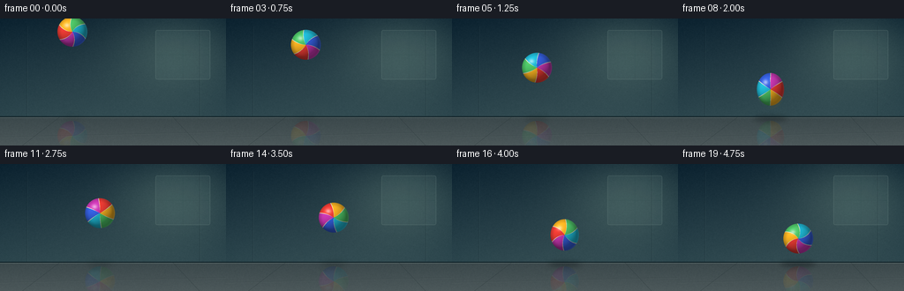
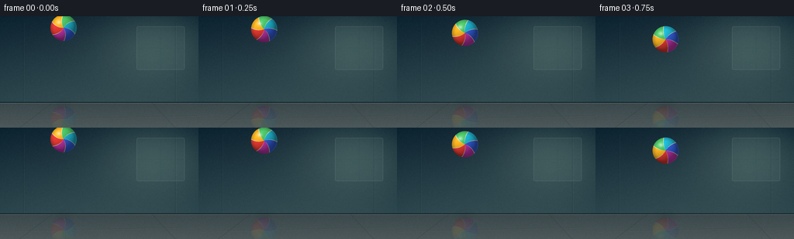

CODING AGENTS AS PIXEL WORLD MODELS
traex/GPT-5.6-Sol · mechanics_0042
点击播放 · 原生 RGB 像素
逐轮保存的候选
回放视频、检查图与代码变化。
每份候选均可单独播放。实际图片检查记录在下方工具轨迹中。
候选 01播放与检查图
点击播放 · 原生 RGB 像素


展开代码变化
--- 上一保存版本
+++ 本次保存版本
@@ -0,0 +1,249 @@
+from pathlib import Path
+import json
+import math
+import numpy as np
+from PIL import Image, ImageDraw, ImageFilter
+import artifact_io
+
+CASE_DIR = Path(__file__).resolve().parent
+SPEC = json.loads((CASE_DIR / "task_spec.json").read_text())
+W, H = SPEC["width"], SPEC["height"]
+N, FPS = SPEC["frames"], float(SPEC["fps"])
+SS = 4
+SW, SH = W * SS, H * SS
+FLOOR_Y = 112.0
+RADIUS = 17.0
+rng = np.random.default_rng(42)
+
+
+def S(v):
+ return int(round(v * SS))
+
+
+def make_background():
+ """A softly lit gym/studio wall above a polished, unmistakably hard floor."""
+ yy, xx = np.mgrid[0:SH, 0:SW]
+ y = yy / SS
+ x = xx / SS
+
+ # Cool blue-green wall with a gentle daylight pool from upper right.
+ top = np.array([20.0, 42.0, 54.0])
+ bot = np.array([51.0, 76.0, 82.0])
+ q = np.clip(y / FLOOR_Y, 0, 1)[..., None]
+ arr = top * (1 - q) + bot * q
+ glow = np.exp(-(((x - 201) / 72) ** 2 + ((y - 35) / 49) ** 2))
+ arr += glow[..., None] * np.array([30, 32, 24])
+ vignette = np.clip(((x - W / 2) / 168) ** 2 + ((y - 67) / 120) ** 2, 0, 1)
+ arr -= vignette[..., None] * np.array([11, 10, 8])
+
+ # The floor is brighter and slightly reflective, with a shallow perspective gradient.
+ floor = y >= FLOOR_Y
+ fq = np.clip((y - FLOOR_Y) / (H - FLOOR_Y), 0, 1)
+ floor_col = np.zeros_like(arr)
+ floor_col[..., 0] = 59 + 17 * fq
+ floor_col[..., 1] = 72 + 16 * fq
+ floor_col[..., 2] = 75 + 15 * fq
+ floor_col += glow[..., None] * np.array([10, 10, 7])
+ arr[floor] = floor_col[floor]
+
+ # Fine concrete/grain texture, static over time to avoid flicker.
+ noise_small = rng.normal(0, 1.25, (H, W)).astype(np.float32)
+ noise = np.array(Image.fromarray(noise_small).resize((SW, SH), Image.Resampling.BILINEAR))
+ arr += noise[..., None]
+ arr = np.uint8(np.clip(arr, 0, 255))
+ im = Image.fromarray(arr, "RGB")
+
+ # Architectural details and hard floor seams.
+ d = ImageDraw.Draw(im, "RGBA")
+ # softly recessed wall panels
+ for px in (30, 226):
+ d.line((S(px), S(8), S(px), S(FLOOR_Y - 1)), fill=(7, 22, 29, 60), width=S(0.6))
+ d.line((S(px + 1), S(8), S(px + 1), S(FLOOR_Y - 1)), fill=(130, 160, 158, 20), width=S(0.5))
+ # broad, defocused window reflection on wall
+ d.rounded_rectangle((S(176), S(13), S(238), S(69)), radius=S(2),
+ fill=(143, 176, 169, 19), outline=(193, 215, 199, 25), width=S(0.7))
+ d.line((S(207), S(14), S(207), S(68)), fill=(37, 66, 70, 26), width=S(1))
+ d.line((S(177), S(41), S(237), S(41)), fill=(37, 66, 70, 24), width=S(1))
+ # floor/wall junction and polished highlight
+ d.line((0, S(FLOOR_Y - .8), SW, S(FLOOR_Y - .8)), fill=(9, 24, 29, 185), width=S(1.2))
+ d.line((0, S(FLOOR_Y + .25), SW, S(FLOOR_Y + .25)), fill=(164, 181, 174, 70), width=S(.65))
+ # perspective tile/concrete seams
+ d.line((S(25), SH, S(67), S(FLOOR_Y)), fill=(22, 36, 39, 70), width=S(.55))
+ d.line((S(226), SH, S(196), S(FLOOR_Y)), fill=(22, 36, 39, 65), width=S(.55))
+ d.line((0, S(134), SW, S(128)), fill=(24, 37, 39, 48), width=S(.55))
+ d.line((0, S(135), SW, S(129)), fill=(155, 168, 162, 20), width=S(.45))
+ return im
+
+
+BACKGROUND = make_background()
+
+
+def trajectory(t):
+ """Ballistic drop followed by one high and one lower bounce."""
+ t1, t2 = 1.75, 4.25 # both impacts land exactly on sampled frames 7 and 17
+ y0 = 15.0
+ ground_center = FLOOR_Y - RADIUS
+ g = 2.0 * (ground_center - y0) / (t1 * t1)
+ v1 = g * ((t2 - t1) / 2.0) # returns to floor at t2
+ if t <= t1:
+ y = y0 + 0.5 * g * t * t
+ vy = g * t
+ elif t <= t2:
+ u = t - t1
+ y = ground_center - v1 * u + 0.5 * g * u * u
+ vy = -v1 + g * u
+ else:
+ u = t - t2
+ v2 = 34.0
+ y = ground_center - v2 * u + 0.5 * g * u * u
+ vy = -v2 + g * u
+ x = 82.0 + 11.4 * t
+ return x, y, vy
+
+
+def add_floor_shadow(frame, x, y, contact=False):
+ height = max(0.0, FLOOR_Y - (y + RADIUS))
+ closeness = math.exp(-height / 27.0)
+ width = (10 + 15 * closeness) * (1.3 if contact else 1.0)
+ alpha = int(32 + 105 * closeness)
+ layer = Image.new("RGBA", (SW, SH), (0, 0, 0, 0))
+ d = ImageDraw.Draw(layer)
+ d.ellipse((S(x - width), S(FLOOR_Y - 1.0), S(x + width), S(FLOOR_Y + 4.0)),
+ fill=(2, 10, 13, alpha))
+ layer = layer.filter(ImageFilter.GaussianBlur(S(2.0 + (1 - closeness) * 2.1)))
+ frame.alpha_composite(layer)
+
+
+def ball_rgba(rx, ry, rotation):
+ """Render colorful curved rubber panels on a lit 3-D ellipsoid."""
+ pad = 3.0
+ pw = max(4, S(2 * (rx + pad)))
+ ph = max(4, S(2 * (ry + pad)))
+ yy, xx = np.mgrid[0:ph, 0:pw]
+ cx, cy = pw / 2, ph / 2
+ nx = (xx + .5 - cx) / (rx * SS)
+ ny = (yy + .5 - cy) / (ry * SS)
+ r2 = nx * nx + ny * ny
+ mask = r2 <= 1.0
+ rr = np.sqrt(np.clip(r2, 0, 1))
+ z = np.sqrt(np.clip(1.0 - r2, 0, 1))
+
+ # Curved six-panel color pattern, with rotation clearly visible between frames.
+ ang = np.arctan2(ny, nx) + rotation + 0.72 * (1.0 - rr) * np.sin(2.2 + rotation * .23)
+ sector_f = ((ang + math.pi) / (2 * math.pi) * 6.0) % 6.0
+ sector = np.floor(sector_f).astype(int)
+ palette = np.array([
+ [244, 62, 54], # red
+ [255, 183, 35], # sunny yellow
+ [80, 202, 106], # green
+ [33, 191, 220], # cyan
+ [55, 99, 230], # blue
+ [207, 57, 183], # magenta
+ ], dtype=float)
+ rgb = palette[sector]
+
+ # Thin dark/cream molded seams between colored panels.
+ dist_to_seam = np.minimum(sector_f % 1.0, 1.0 - sector_f % 1.0)
+ seam = dist_to_seam < 0.027
+ rgb[seam] = np.array([237, 231, 202])
+
+ # Convincing spherical rubber lighting (upper-left key, cool ambient).
+ light = np.array([-0.52, -0.64, 0.72])
+ light /= np.linalg.norm(light)
+ ndotl = np.clip(nx * light[0] + ny * light[1] + z * light[2], 0, 1)
+ shade = 0.53 + 0.53 * ndotl
+ shade *= (1.0 - 0.17 * np.clip(rr - .72, 0, 1) / .28)
+ rgb *= shade[..., None]
+ # glossy highlight and a soft cool rim on the lower-right
+ spec = np.exp(-(((nx + .36) / .18) ** 2 + ((ny + .43) / .15) ** 2))
+ rgb = rgb * (1 - .56 * spec[..., None]) + 255 * (.56 * spec[..., None])
+ rim = np.clip((rr - .88) / .12, 0, 1) * np.clip(nx + .1, 0, 1) * .12
+ rgb += rim[..., None] * np.array([110, 145, 170])
+
+ alpha = np.zeros((ph, pw), dtype=np.uint8)
+ # anti-aliased edge one high-res pixel wide
+ edge = np.clip((1.012 - rr) * (rx * SS), 0, 1)
+ alpha[mask] = np.uint8(np.clip(edge[mask] * 255, 0, 255))
+ rgba = np.zeros((ph, pw, 4), dtype=np.uint8)
+ rgba[..., :3] = np.uint8(np.clip(rgb, 0, 255))
+ rgba[..., 3] = alpha
+ return Image.fromarray(rgba, "RGBA")
+
+
+def add_reflection(frame, x, rx, ry, ball_patch):
+ # Polished-floor echo, clipped below the surface and fading quickly.
+ refl = ball_patch.transpose(Image.Transpose.FLIP_TOP_BOTTOM)
+ a = np.asarray(refl.getchannel("A"), dtype=np.float32)
+ fade = np.linspace(.23, 0.0, refl.height)[:, None]
+ a = np.uint8(a * fade)
+ refl.putalpha(Image.fromarray(a))
+ px = S(x) - refl.width // 2
+ py = S(FLOOR_Y + 1)
+ frame.alpha_composite(refl, (px, py))
+
+
+def add_impact_marks(frame, x, strength):
+ layer = Image.new("RGBA", (SW, SH), (0, 0, 0, 0))
+ d = ImageDraw.Draw(layer)
+ # Two clean, low elliptical ripples emphasize contact with a hard surface.
+ for w, a in ((29, 92), (39, 45)):
+ box = (S(x - w), S(FLOOR_Y - 1.0), S(x + w), S(FLOOR_Y + 5.0))
+ d.arc(box, 187, 353, fill=(190, 225, 221, int(a * strength)), width=S(.65))
+ # Tiny outward impact ticks; no dust cloud, keeping the floor hard/clean.
+ for side in (-1, 1):
+ d.line((S(x + side * 20), S(FLOOR_Y - 1),
+ S(x + side * 29), S(FLOOR_Y - 5)),
+ fill=(181, 220, 217, int(100 * strength)), width=S(.8))
+ frame.alpha_composite(layer)
+
+
+def render_frame(i):
+ t = i / FPS
+ x, y, vy = trajectory(t)
+ impact = i in (7, 17)
+
+ # Squash at contact, stretch immediately before/after fast impacts.
+ rx, ry = RADIUS, RADIUS
+ if impact:
+ # Second impact is a little less extreme but remains clearly readable.
+ amount = 1.0 if i == 7 else .82
+ rx = RADIUS * (1.0 + .28 * amount)
+ ry = RADIUS * (1.0 - .25 * amount)
+ y = FLOOR_Y - ry
+ elif i in (6, 8):
+ rx, ry = RADIUS * .91, RADIUS * 1.09
+ elif i in (16, 18):
+ rx, ry = RADIUS * .95, RADIUS * 1.05
+
+ frame = BACKGROUND.convert("RGBA")
+ add_floor_shadow(frame, x, y, impact)
+
+ rotation = 0.55 + 1.55 * t
+ ball = ball_rgba(rx, ry, rotation)
+ add_reflection(frame, x, rx, ry, ball)
+
+ # A very restrained directional trail only at the fastest sampled moves.
+ if i in (6, 8):
+ trail = ball.copy()
+ trail.putalpha(trail.getchannel("A").point(lambda a: int(a * .08)))
+ direction = -1 if i == 6 else 1
+ frame.alpha_composite(trail, (S(x) - trail.width // 2, S(y + direction * 4.0) - trail.height // 2))
+
+ frame.alpha_composite(ball, (S(x) - ball.width // 2, S(y) - ball.height // 2))
+ if impact:
+ add_impact_marks(frame, x, 1.0 if i == 7 else .75)
+
+ # Downsample supersampled render for clean, cinematic edges.
+ rgb = frame.convert("RGB").resize((W, H), Image.Resampling.LANCZOS)
+ return np.asarray(rgb, dtype=np.uint8)
+
+
+def main():
+ frames = np.stack([render_frame(i) for i in range(N)], axis=0)
+ assert frames.shape == (N, H, W, 3) and frames.dtype == np.uint8
+ artifact_io.save(frames, CASE_DIR)
+ print(f"saved {N} RGB frames at {W}x{H}, {FPS:g} fps")
+
+
+if __name__ == "__main__":
+ main()
可观测工具轨迹
实际执行的命令与返回图片。
命令 1exit 0
/bin/bash -lc "cat prompt.txt && printf '\\n--- GENERATION_RULES.md ---\\n' && cat GENERATION_RULES.md && printf '\\n--- task_spec.json ---\\n' && cat task_spec.json"
命令 2exit 0
/bin/bash -lc "find . -maxdepth 3 -type f -printf '%p\\n' | sort && printf '\\n--- binaries ---\\n' && command -v ffmpeg || true && command -v python3 || true && command -v convert || true"
命令 3exit 0
/bin/bash -lc 'cat artifact_io.py'
命令 4exit 0
/bin/bash -lc "cat > generate.py <<'PY'
from pathlib import Path
import json
import math
import numpy as np
from PIL import Image, ImageDraw, ImageFilter
import artifact_io
CASE_DIR = Path(__file__).resolve().parent
SPEC = json.loads((CASE_DIR / \"task_spec.json\").read_text())
W, H = SPEC[\"width\"], SPEC[\"height\"]
N, FPS = SPEC[\"frames\"], float(SPEC[\"fps\"])
SS = 4
SW, SH = W * SS, H * SS
FLOOR_Y = 112.0
RADIUS = 17.0
rng = np.random.default_rng(42)
def S(v):
return int(round(v * SS))
def make_background():
\"\"\"A softly lit gym/studio wall above a polished, unmistakably hard floor.\"\"\"
yy, xx = np.mgrid[0:SH, 0:SW]
y = yy / SS
x = xx / SS
# Cool blue-green wall with a gentle daylight pool from upper right.
top = np.array([20.0, 42.0, 54.0])
bot = np.array([51.0, 76.0, 82.0])
q = np.clip(y / FLOOR_Y, 0, 1)[..., None]
arr = top * (1 - q) + bot * q
glow = np.exp(-(((x - 201) / 72) ** 2 + ((y - 35) / 49) ** 2))
arr += glow[..., None] * np.array([30, 32, 24])
vignette = np.clip(((x - W / 2) / 168) ** 2 + ((y - 67) / 120) ** 2, 0, 1)
arr -= vignette[..., None] * np.array([11, 10, 8])
# The floor is brighter and slightly reflective, with a shallow perspective gradient.
floor = y >= FLOOR_Y
fq = np.clip((y - FLOOR_Y) / (H - FLOOR_Y), 0, 1)
floor_col = np.zeros_like(arr)
floor_col[..., 0] = 59 + 17 * fq
floor_col[..., 1] = 72 + 16 * fq
floor_col[..., 2] = 75 + 15 * fq
floor_col += glow[..., None] * np.array([10, 10, 7])
arr[floor] = floor_col[floor]
# Fine concrete/grain texture, static over time to avoid flicker.
noise_small = rng.normal(0, 1.25, (H, W)).astype(np.float32)
noise = np.array(Image.fromarray(noise_small).resize((SW, SH), Image.Resampling.BILINEAR))
arr += noise[..., None]
arr = np.uint8(np.clip(arr, 0, 255))
im = Image.fromarray(arr, \"RGB\")
# Architectural details and hard floor seams.
d = ImageDraw.Draw(im, \"RGBA\")
# softly recessed wall panels
for px in (30, 226):
d.line((S(px), S(8), S(px), S(FLOOR_Y - 1)), fill=(7, 22, 29, 60), width=S(0.6))
d.line((S(px + 1), S(8), S(px + 1), S(FLOOR_Y - 1)), fill=(130, 160, 158, 20), width=S(0.5))
# broad, defocused window reflection on wall
d.rounded_rectangle((S(176), S(13), S(238), S(69)), radius=S(2),
fill=(143, 176, 169, 19), outline=(193, 215, 199, 25), width=S(0.7))
d.line((S(207), S(14), S(207), S(68)), fill=(37, 66, 70, 26), width=S(1))
d.line((S(177), S(41), S(237), S(41)), fill=(37, 66, 70, 24), width=S(1))
# floor/wall junction and polished highlight
d.line((0, S(FLOOR_Y - .8), SW, S(FLOOR_Y - .8)), fill=(9, 24, 29, 185), width=S(1.2))
d.line((0, S(FLOOR_Y + .25), SW, S(FLOOR_Y + .25)), fill=(164, 181, 174, 70), width=S(.65))
# perspective tile/concrete seams
d.line((S(25), SH, S(67), S(FLOOR_Y)), fill=(22, 36, 39, 70), width=S(.55))
d.line((S(226), SH, S(196), S(FLOOR_Y)), fill=(22, 36, 39, 65), width=S(.55))
d.line((0, S(134), SW, S(128)), fill=(24, 37, 39, 48), width=S(.55))
d.line((0, S(135), SW, S(129)), fill=(155, 168, 162, 20), width=S(.45))
return im
BACKGROUND = make_background()
def trajectory(t):
\"\"\"Ballistic drop followed by one high and one lower bounce.\"\"\"
t1, t2 = 1.75, 4.25 # both impacts land exactly on sampled frames 7 and 17
y0 = 15.0
ground_center = FLOOR_Y - RADIUS
g = 2.0 * (ground_center - y0) / (t1 * t1)
v1 = g * ((t2 - t1) / 2.0) # returns to floor at t2
if t <= t1:
y = y0 + 0.5 * g * t * t
vy = g * t
elif t <= t2:
u = t - t1
y = ground_center - v1 * u + 0.5 * g * u * u
vy = -v1 + g * u
else:
u = t - t2
v2 = 34.0
y = ground_center - v2 * u + 0.5 * g * u * u
vy = -v2 + g * u
x = 82.0 + 11.4 * t
return x, y, vy
def add_floor_shadow(frame, x, y, contact=False):
height = max(0.0, FLOOR_Y - (y + RADIUS))
closeness = math.exp(-height / 27.0)
width = (10 + 15 * closeness) * (1.3 if contact else 1.0)
alpha = int(32 + 105 * closeness)
layer = Image.new(\"RGBA\", (SW, SH), (0, 0, 0, 0))
d = ImageDraw.Draw(layer)
d.ellipse((S(x - width), S(FLOOR_Y - 1.0), S(x + width), S(FLOOR_Y + 4.0)),
fill=(2, 10, 13, alpha))
layer = layer.filter(ImageFilter.GaussianBlur(S(2.0 + (1 - closeness) * 2.1)))
frame.alpha_composite(layer)
def ball_rgba(rx, ry, rotation):
\"\"\"Render colorful curved rubber panels on a lit 3-D ellipsoid.\"\"\"
pad = 3.0
pw = max(4, S(2 * (rx + pad)))
ph = max(4, S(2 * (ry + pad)))
yy, xx = np.mgrid[0:ph, 0:pw]
cx, cy = pw / 2, ph / 2
nx = (xx + .5 - cx) / (rx * SS)
ny = (yy + .5 - cy) / (ry * SS)
r2 = nx * nx + ny * ny
mask = r2 <= 1.0
rr = np.sqrt(np.clip(r2, 0, 1))
z = np.sqrt(np.clip(1.0 - r2, 0, 1))
# Curved six-panel color pattern, with rotation clearly visible between frames.
ang = np.arctan2(ny, nx) + rotation + 0.72 * (1.0 - rr) * np.sin(2.2 + rotation * .23)
sector_f = ((ang + math.pi) / (2 * math.pi) * 6.0) % 6.0
sector = np.floor(sector_f).astype(int)
palette = np.array([
[244, 62, 54], # red
[255, 183, 35], # sunny yellow
[80, 202, 106], # green
[33, 191, 220], # cyan
[55, 99, 230], # blue
[207, 57, 183], # magenta
], dtype=float)
rgb = palette[sector]
# Thin dark/cream molded seams between colored panels.
dist_to_seam = np.minimum(sector_f % 1.0, 1.0 - sector_f % 1.0)
seam = dist_to_seam < 0.027
rgb[seam] = np.array([237, 231, 202])
# Convincing spherical rubber lighting (upper-left key, cool ambient).
light = np.array([-0.52, -0.64, 0.72])
light /= np.linalg.norm(light)
ndotl = np.clip(nx * light[0] + ny * light[1] + z * light[2], 0, 1)
shade = 0.53 + 0.53 * ndotl
shade *= (1.0 - 0.17 * np.clip(rr - .72, 0, 1) / .28)
rgb *= shade[..., None]
# glossy highlight and a soft cool rim on the lower-right
spec = np.exp(-(((nx + .36) / .18) ** 2 + ((ny + .43) / .15) ** 2))
rgb = rgb * (1 - .56 * spec[..., None]) + 255 * (.56 * spec[..., None])
rim = np.clip((rr - .88) / .12, 0, 1) * np.clip(nx + .1, 0, 1) * .12
rgb += rim[..., None] * np.array([110, 145, 170])
alpha = np.zeros((ph, pw), dtype=np.uint8)
# anti-aliased edge one high-res pixel wide
edge = np.clip((1.012 - rr) * (rx * SS), 0, 1)
alpha[mask] = np.uint8(np.clip(edge[mask] * 255, 0, 255))
rgba = np.zeros((ph, pw, 4), dtype=np.uint8)
rgba[..., :3] = np.uint8(np.clip(rgb, 0, 255))
rgba[..., 3] = alpha
return Image.fromarray(rgba, \"RGBA\")
def add_reflection(frame, x, rx, ry, ball_patch):
# Polished-floor echo, clipped below the surface and fading quickly.
refl = ball_patch.transpose(Image.Transpose.FLIP_TOP_BOTTOM)
a = np.asarray(refl.getchannel(\"A\"), dtype=np.float32)
fade = np.linspace(.23, 0.0, refl.height)[:, None]
a = np.uint8(a * fade)
refl.putalpha(Image.fromarray(a))
px = S(x) - refl.width // 2
py = S(FLOOR_Y + 1)
frame.alpha_composite(refl, (px, py))
def add_impact_marks(frame, x, strength):
layer = Image.new(\"RGBA\", (SW, SH), (0, 0, 0, 0))
d = ImageDraw.Draw(layer)
# Two clean, low elliptical ripples emphasize contact with a hard surface.
for w, a in ((29, 92), (39, 45)):
box = (S(x - w), S(FLOOR_Y - 1.0), S(x + w), S(FLOOR_Y + 5.0))
d.arc(box, 187, 353, fill=(190, 225, 221, int(a * strength)), width=S(.65))
# Tiny outward impact ticks; no dust cloud, keeping the floor hard/clean.
for side in (-1, 1):
d.line((S(x + side * 20), S(FLOOR_Y - 1),
S(x + side * 29), S(FLOOR_Y - 5)),
fill=(181, 220, 217, int(100 * strength)), width=S(.8))
frame.alpha_composite(layer)
def render_frame(i):
t = i / FPS
x, y, vy = trajectory(t)
impact = i in (7, 17)
# Squash at contact, stretch immediately before/after fast impacts.
rx, ry = RADIUS, RADIUS
if impact:
# Second impact is a little less extreme but remains clearly readable.
amount = 1.0 if i == 7 else .82
rx = RADIUS * (1.0 + .28 * amount)
ry = RADIUS * (1.0 - .25 * amount)
y = FLOOR_Y - ry
elif i in (6, 8):
rx, ry = RADIUS * .91, RADIUS * 1.09
elif i in (16, 18):
rx, ry = RADIUS * .95, RADIUS * 1.05
frame = BACKGROUND.convert(\"RGBA\")
add_floor_shadow(frame, x, y, impact)
rotation = 0.55 + 1.55 * t
ball = ball_rgba(rx, ry, rotation)
add_reflection(frame, x, rx, ry, ball)
# A very restrained directional trail only at the fastest sampled moves.
if i in (6, 8):
trail = ball.copy()
trail.putalpha(trail.getchannel(\"A\").point(lambda a: int(a * .08)))
direction = -1 if i == 6 else 1
frame.alpha_composite(trail, (S(x) - trail.width // 2, S(y + direction * 4.0) - trail.height // 2))
frame.alpha_composite(ball, (S(x) - ball.width // 2, S(y) - ball.height // 2))
if impact:
add_impact_marks(frame, x, 1.0 if i == 7 else .75)
# Downsample supersampled render for clean, cinematic edges.
rgb = frame.convert(\"RGB\").resize((W, H), Image.Resampling.LANCZOS)
return np.asarray(rgb, dtype=np.uint8)
def main():
frames = np.stack([render_frame(i) for i in range(N)], axis=0)
assert frames.shape == (N, H, W, 3) and frames.dtype == np.uint8
artifact_io.save(frames, CASE_DIR)
print(f\"saved {N} RGB frames at {W}x{H}, {FPS:g} fps\")
if __name__ == \"__main__\":
main()
PY
python3 generate.py
ls -lh pixels.npz index.html inspection.png transition_check.png frames/00.png frames/07.png frames/17.png"命令 5exit 0
/bin/bash -lc 'command -v chafa || command -v viu || command -v jp2 || true'
命令 6exit 0
/bin/bash -lc "python3 - <<'PY'
import numpy as np
from PIL import Image
z=np.load('pixels.npz')['pixels']
print('tensor',z.shape,z.dtype,'nonzero',np.count_nonzero(z))
# track expected physical sample locations and report frame-to-frame change
for i in range(20):
t=i/4; im=np.array(Image.open(f'frames/{i:02d}.png'))
if t<=1.75: y=15+0.5*(160/3.0625)*t*t
elif t<=4.25:
u=t-1.75; g=160/3.0625; y=95-(g*1.25)*u+0.5*g*u*u
else:
u=t-4.25;y=95-34*u+0.5*g*u*u
diff=0 if i==0 else np.mean(np.abs(im.astype(int)-np.array(Image.open(f'frames/{i-1:02d}.png')).astype(int)))
print(f'{i:02d} t={t:.2f} center_y={y:5.1f} frame_delta={diff:5.2f}')
PY"保存候选 1 份；完成命令 6 次；可验证图片返回 0 张。原始 API 响应与完整日志保留在本地。